A design system for a team of 200+ members. Bringing features to market 30% faster
Building a design system from scratch for MyOffice’s flagship desktop editors.
0→1 · Design system for Linux, Windows and macOS
About the project
MyOffice builds software for businesses, including mobile, desktop and web document editors, email, team messaging and cloud storage.
| Users | 1M+ monthly active users |
|---|---|
| Markets | B2B, B2G, B2C |
| Platform | Desktop |
| Operating systems | Windows, Linux, macOS |
https://myoffice.ru/products/ofis-dlya-doma/
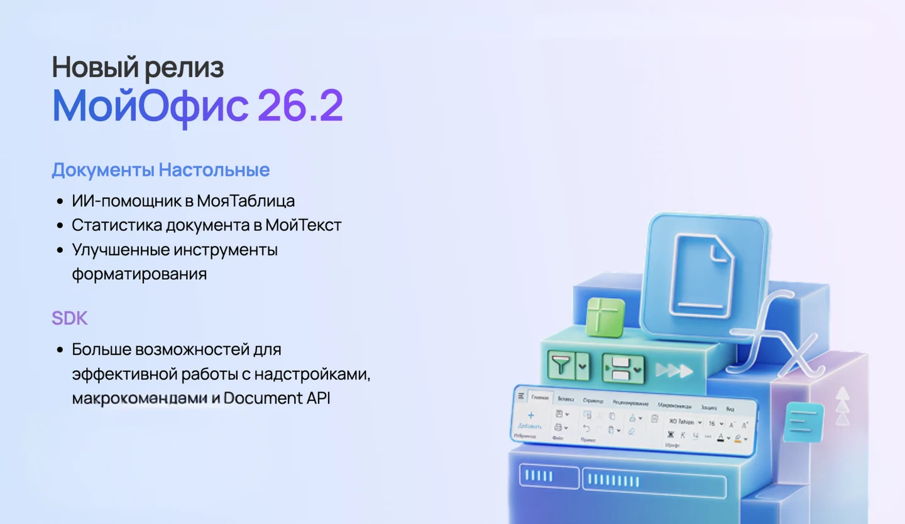
https://myoffice.ru/trial/
The desktop editors team
More than 200 designers, developers and testers worked on the spreadsheet, word processing and presentation apps.
The team grew rapidly in 2023. To keep shipping features at the same pace and quality, and improve on both, we had to change how we worked. A design system became essential.
Who we designed for
- The 200+ designers, developers and testers building the desktop editors
- The 1M+ people using the desktop editors each month
The design system team
The number of people working on the design system varied by stage.
- 4–18 designers
- 2–7 developers
Where we started
- People struggled to coordinate decisions across a team of 200+
- 400 duplicate components in the codebase
- Designers detached component instances and modified them independently in their own files
- Inconsistent UX and UI decisions
- 140+ hours lost each sprint trying to establish guidelines that had never been written
- A UI kit that didn’t meet designers’ needs and encouraged them to detach instances
- No accessibility support
- A large backlog of technical debt
- No documentation or agreed design patterns
- Workflows that depended on manual steps
Results
- 60+ components in Figma
- 20+ Qt/QML components in code
- More than 10,000 lines of code optimized
- Icon, style and component libraries built from scratch
- Support for accessibility guidelines, including WCAG
- One-click workflows for developers that replaced manual steps and rounds of approvals
- Design system metrics and feedback from the team
- A shared knowledge base
- Desktop Editors Storybook, a custom component explorer built from scratch for Qt/QML
- Support for UI themes and a design token system that could grow with the product
My role
I led the design work, managed the project and worked on the components myself.
I started by asking where people were losing time. I investigated the bottlenecks and tested possible solutions in my own design work. Then I introduced the new workflows to the wider team and gathered feedback from designers, developers and testers.
How we worked
- I put together a proof of concept and modeled the cost of our existing workflows and how those costs would change with a design system.
- That gave us the case for a dedicated team.
- I led the team as we built and populated each library from scratch.
- I proposed new workflows. We tried them as a team and worked through the problems that slowed us down.
- The new workflows let us automate parts of development.
- I defined metrics for the design system, and we put them into practice as a team.
Here’s how each part of the project unfolded.
Proof of concept
Step 1. Model the investment
I calculated how much our existing workflows were costing us, identified where we could save time and worked out which savings a design system could deliver. Those figures became the business case for investing in the system.
| 15.4% | minimum projected savings in process costs after rollout |
|---|---|
| 2 months | projected payback period after rollout |
| 3% | savings in process costs needed to break even |
| 22.7% | projected ROI at the break-even point |
I modeled three rollout scenarios, depending on which workflows the system would cover.
- Design only
- Design and development
- Design, development and testing
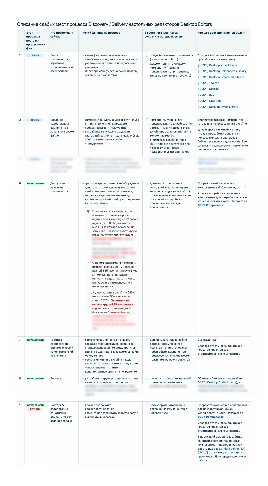

DESY was the name we gave the design system.
Step 2. Build support
I presented the proposal to the entire design department and found colleagues who would back it. I also discussed it with my lead, the company’s head of product design and the engineering leads.
Together we got the proposal in front of the CTO.
Step 3. Secure a team
We secured resources and a dedicated design system team.
The icon library
While we waited for approval for the design system team, I started organizing the icon library.
Where we started
- No shared icon library or rules for using icons
- No documented workflow
- No naming conventions or agreed place to store icons
- Different icon sets in Figma and in code
- Duplicate icons and size variants. We drew each icon three times, once for each editor.
- PNG assets that lost sharpness when the interface scaled
- More than 5,000 obsolete graphic assets in the codebase
My contribution
- I created a central icon library.
- I defined and documented how we would work on icons.
- I wrote guidelines for drawing icons, choosing sizes and using them in the interface.
- I led the migration from PNG to SVG.
- I tested the new workflow in my own design work.
- I worked with the team to automate icon delivery.
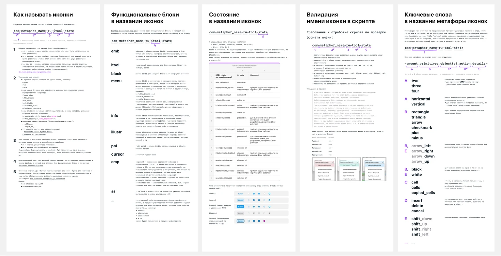
The design team’s contribution
- Under my direction, the designers redrew more than 1,500 icons as SVGs.
- They told me what worked and where they got stuck, so I could quickly adapt the workflow to the team’s needs.
- They learned to use GitHub during the migration from PNG to SVG.
Later, we automated icon export from Figma and retired that manual step.
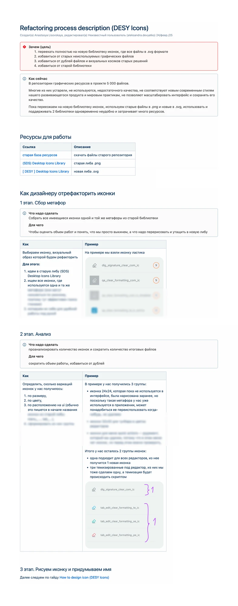
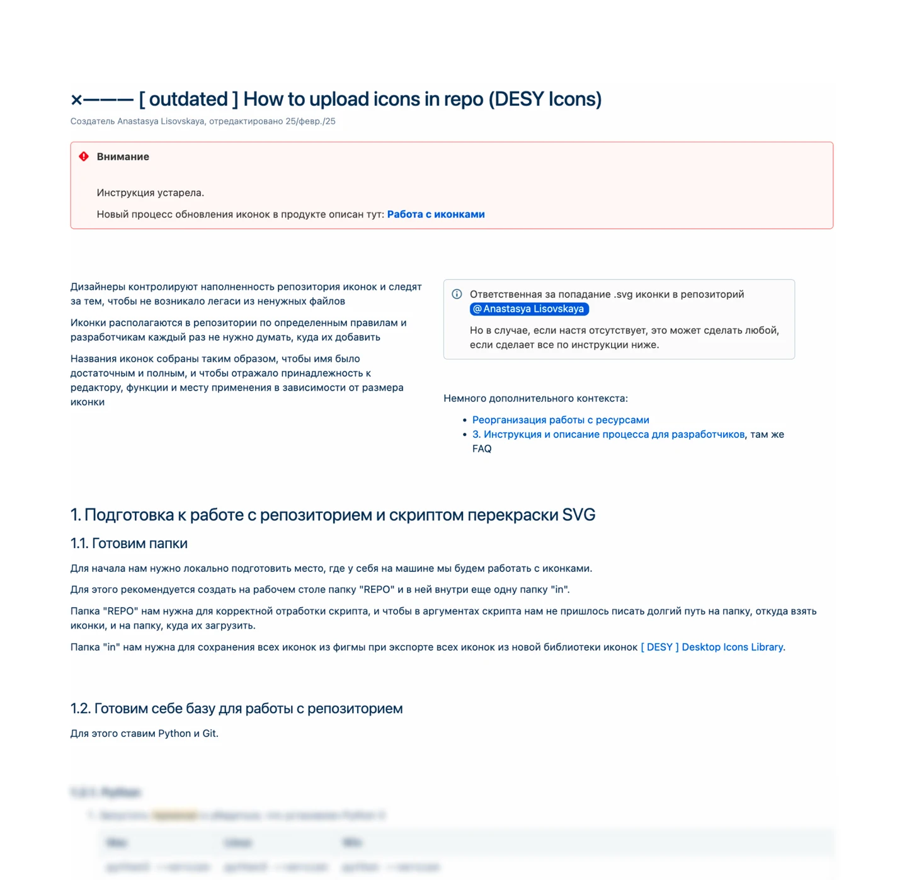
The development team’s contribution
- The developers set up a dedicated GitHub repository and wrote instructions for designers.
- They replaced PNG icons with SVGs, using automation where possible and making the remaining changes by hand.
- They wrote a script that uses the Figma API to pull all the icons into the product build.

What changed
For the team
Designers and developers now had a straightforward way to get an icon into the product.
— Any developer could import icons with one click.
— A designer only had to draw the icon and add it to the library.
— Everyone had access to the same library, documentation, workflow and guidelines.
— Designers learned to draw icons to the same standards and could review each other’s work without waiting for me.
For the business
— A single click replaced hours of manually integrating icons.
— High-quality, scalable SVG assets made the product look more polished and consistent.
For the 1M+ people using the product
— We removed 200+ duplicates and more than 5,000 obsolete graphic assets. The build got smaller and the interface gained a more consistent visual language.
— Icons stayed sharp as users scaled the interface or moved between screen resolutions.
The component library
As design system lead, I started organizing the component library while we were rebuilding the icon workflow.
Where we started
- The UI kit fell short of the product’s functional requirements and slowed designers down.
- Designers detached instances, made copies and customized them for individual features.
- Developers did much the same thing. They would take a similar component and adapt it locally. The codebase contained 400+ duplicates.
- Technical constraints in Qt/QML limited the functionality we could offer users.
- Figma components and their implementations had drifted apart.
- The team had no agreed workflows or guidelines.
- Every sprint, people lost time repeating the same work.
They built components, documented them and worked through edge cases and technical constraints all over again.
My contribution
- I inventoried the components designers needed, from basic controls to complex components and templates.
- I designed the core components and UX patterns and set the direction for the design system across the desktop editors.
- I designed Desktop Editors Storybook and led its development and launch. We built this component explorer from scratch for Qt/QML.
- I set up the design workflows, mentored the designers and reviewed their work as they went.
- I set the strategy, built the roadmaps, planned the work and allocated the team’s time.
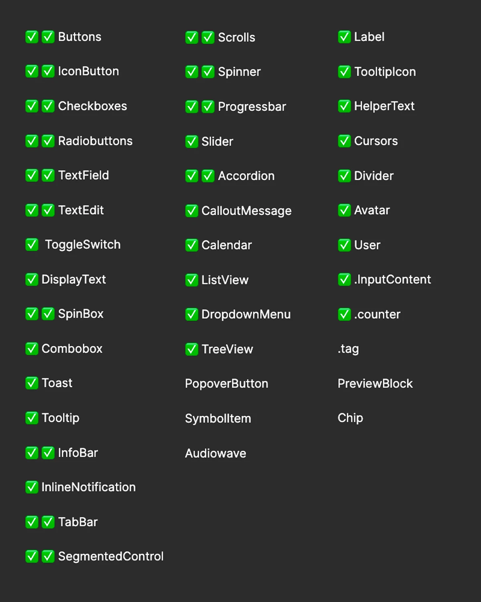
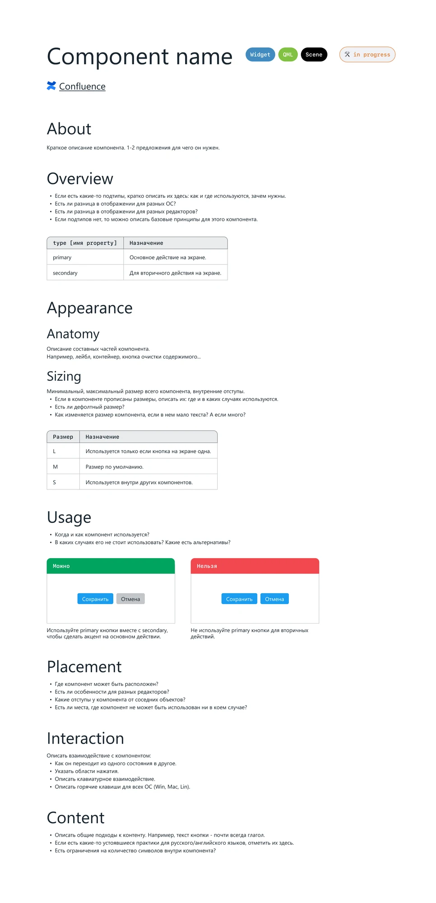

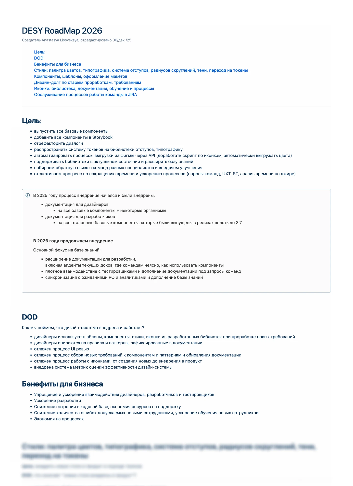
I wrote the first strategy in 2025, while we were actively building the system. I updated it to reflect what we had delivered that year. Each section sets out a definition of done for design and development, completed work and plans for the following year.
The design team’s contribution
Between two and five designers worked on components, depending on the stage of the project and the pace of delivery.
Their work included the following.
- They designed 60+ components in Figma.
- They designed the base components from scratch, studying their use across a product with more than 100 features.
- They also designed complex components from scratch, including dialogs, toolbars and supporting side panels.
- They refined and expanded the emerging library of guidelines and UX patterns.
- They redesigned the entire style library.
- They created a glossary and kept it up to date so that 200+ designers, developers and testers could use the same terms.

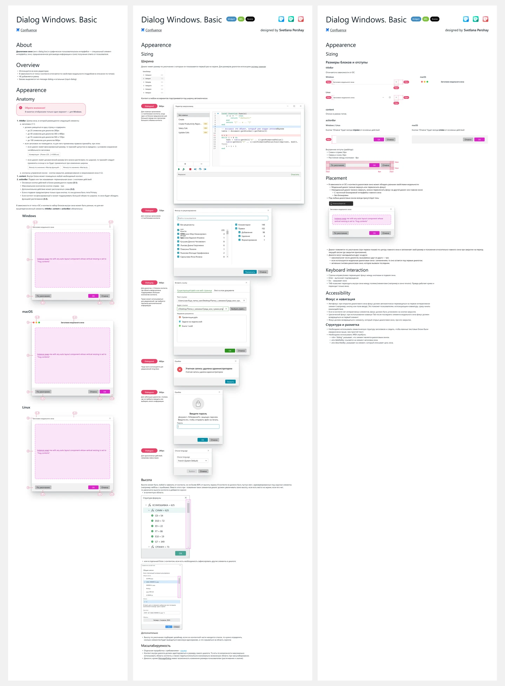

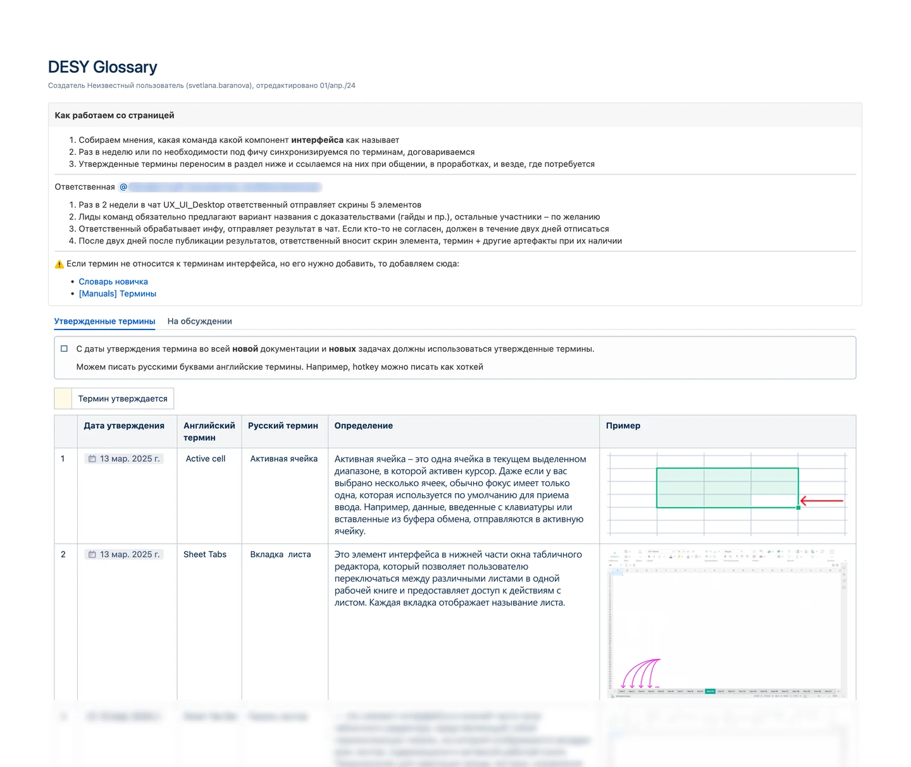
The development team’s contribution
Between two and seven developers worked on the design system, depending on the stage of the project and the pace of delivery.
Here’s what they built and documented.
- They implemented more than 20 base components in Qt/QML.
- They built a custom Qt/QML component explorer from scratch and added 20+ base components to it.
- They wrote technical documentation for each component.
- They refactored a 12-year-old codebase so the new components could replace the old ones in the product.
- At regular design system demos, they taught designers and testers how the Qt/QML components worked and where the technology set limits.
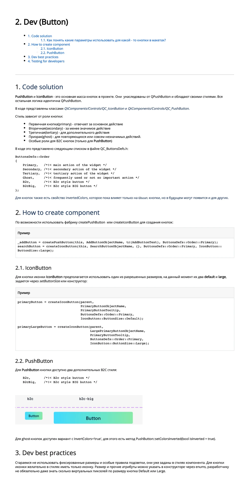
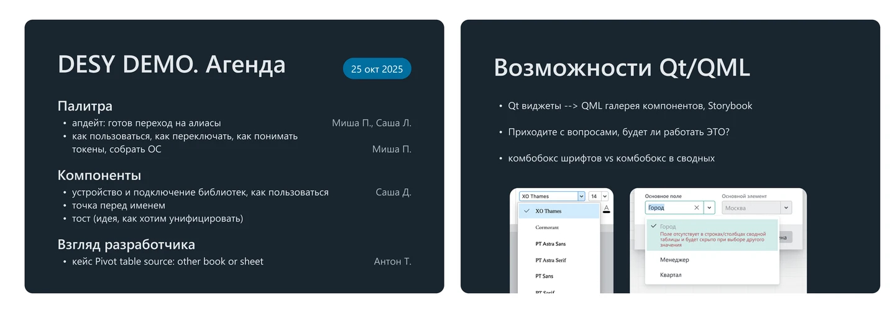
What changed
For the team
The shared components and documentation made everyday design and development faster.
— We built and shipped 20+ base components, making development 28% faster.
— We designed 60+ complex components in Figma, making the design process 30% faster.
— We gave 200+ designers, developers and testers a shared reference for using each component in design and code, and for knowing what to check during testing.
— We resolved discrepancies between Figma and code.
— Both design reviews and code reviews became faster.
— After refactoring, components behaved the same way across features. Each release had fewer defects.
For the business
— Shared guidelines, documentation and workflows helped us bring features to market 30% faster.
— Refactoring legacy code and aligning it with Figma made releases more predictable. Fewer bugs meant less time spent testing.
— The base components improved the quality of UX and UI decisions and gave the product a more polished appearance.
— Fewer users contacted support with the same recurring questions.
For the 1M+ people using the product
— Consistent component behavior and usage made the editors easier to learn and use.
— Users received new features sooner and were more satisfied with the product.
The color style library
While the design system team built the component libraries and documented them, I started working on the color palette.
Where we started
- The palette was too limited to support new features.
- Designers created colors locally in their own Figma files.
- It was hard to tell who had introduced a color, where it was used or what it was for.
- Developers added colors to a CSV file by hand, which led to errors.
- Component styles, including colors, were scattered across the codebase. There was no shared library.
- We had no common rules for choosing a shade.
- The product had no support for dark mode or white-label branding.

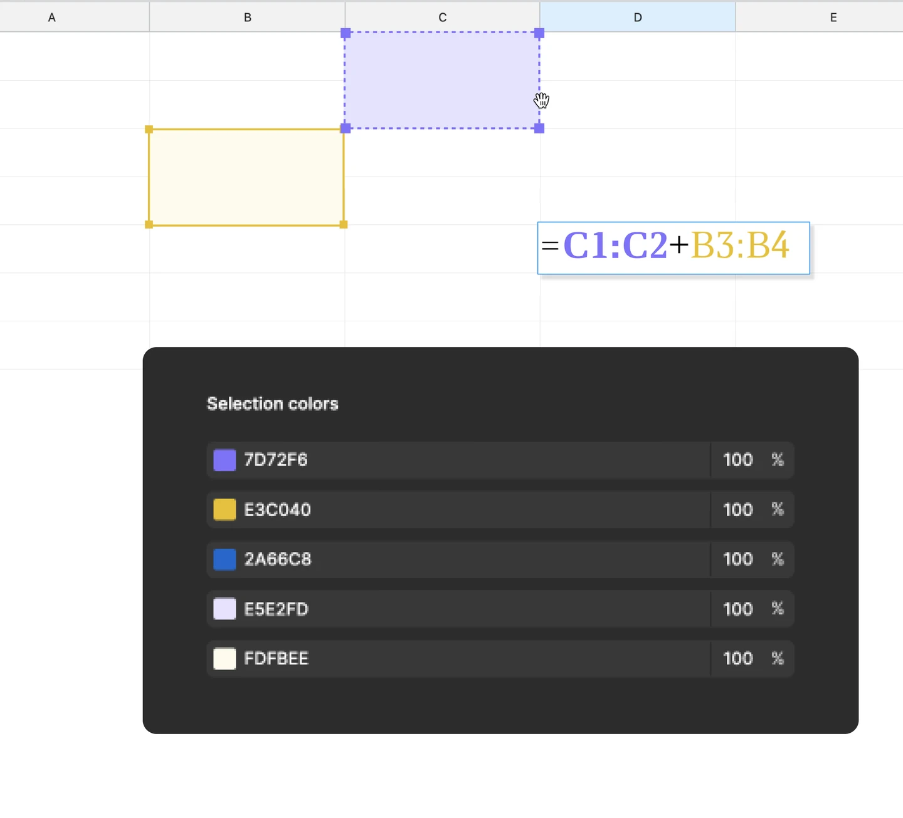
My contribution
- I investigated the problems with the existing palette and defined what the team and the product would need as they grew.
- I laid the foundations for a color token library.
- I audited color use across more than 100 features and built a new palette from scratch.
- I designed a stable token structure that could grow with the product.
- I built theming and accessibility support into the system.
- I documented the principles behind the palette, its usage guidelines and the workflow for changing it.
- I designed and tested that workflow, then rolled it out to the team of 200+.
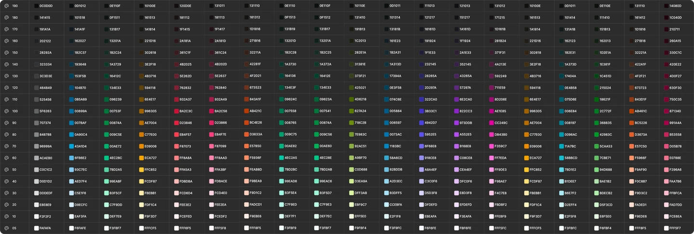

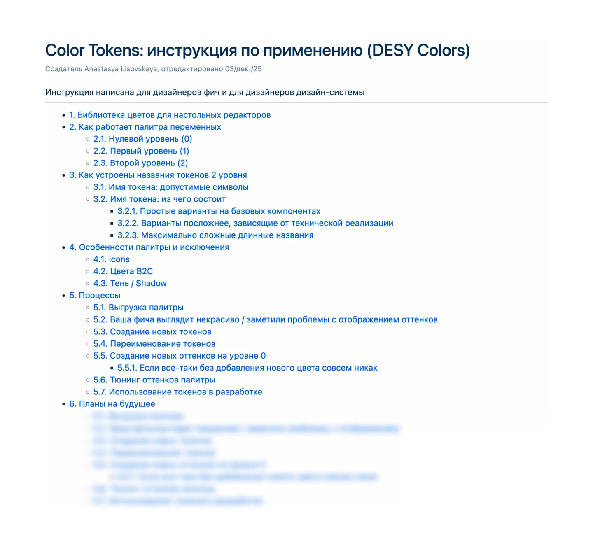
The design team’s contribution
Fifteen designers took part in the main rollout of the new palette.
Their work included the following.
- They applied the new colors to components we had already built.
- They mapped the old colors to the new ones and flagged cases where the mapping was unclear.
- They gave feedback as they tried out the new system and workflows.
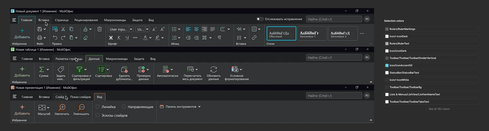
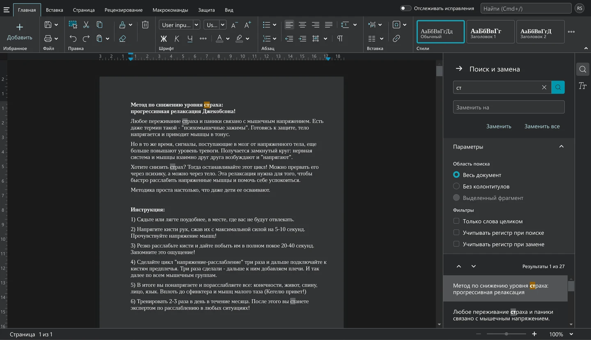


The development team’s contribution
Four developers implemented the new palette in code.
Here’s how they handled the migration.
- They inspected the legacy code to estimate the scope of the work and identify all the places where styles were defined.
- They wrote a script that found more than 300 hardcoded colors.
- They refactored styles across the product and consolidated them in a single library.
- They automated the migration from the old CSS and CSV files to the new library.
- Across 100+ features, they worked with designers to find places where styles hadn’t taken effect or colors needed adjusting.


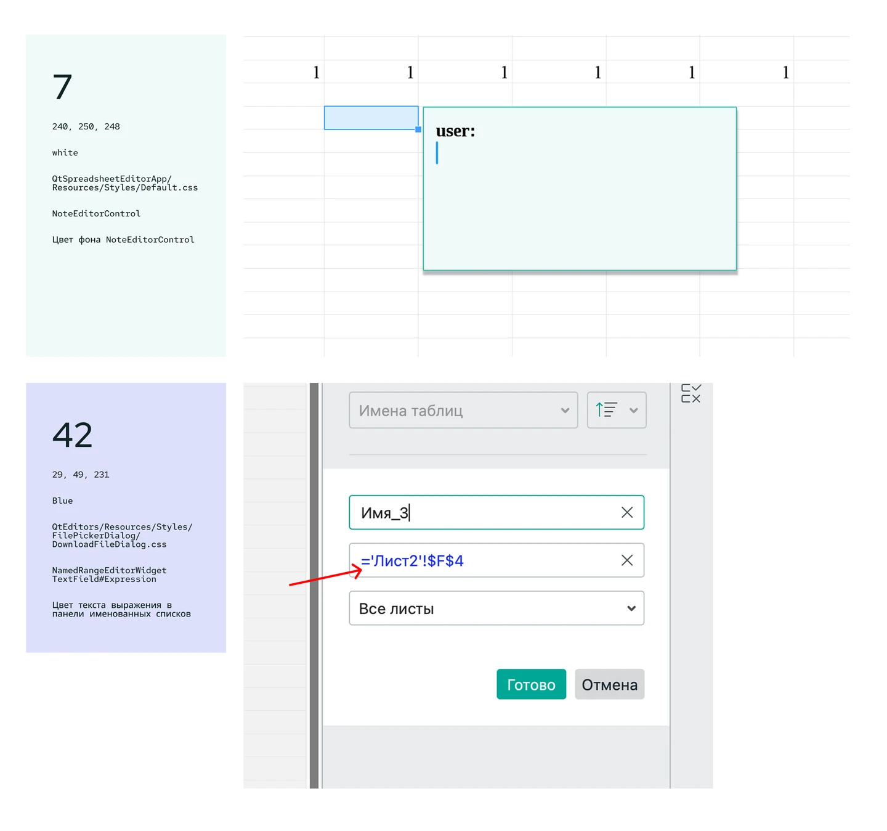

What changed
For the team
— Designers had a palette that covered every feature and fit the way they worked.
— Designers and developers shared a straightforward, documented workflow.
— Developers only needed to reference a color token by name once in the code.
— Designers could then adjust and fine-tune colors without changing any code.
For the business
— A one-click build replaced hours of hardcoding color values.
— We could apply multiple color fixes in one click. The same changes used to take weeks of work and approvals.
— The system made it easier to scale and respond to market requirements for white-label branding, dark mode and accessibility.
For the 1M+ people using the product
— Interface elements became more visually consistent, with better contrast and overall visual quality.
— The product gained support for accessibility guidelines.
— We added dark mode.
I shared this work at DUMP Spb in February 2026.
I explained how we built color tokens from scratch in a 12-year-old codebase with inconsistent visual design. I walked through each step, from auditing the code to rolling out the new workflow.

Keeping the work visible
Work on this scale depended on the whole team.
We used a few regular meetings to make our process and progress visible to everyone.
- Weekly check-ins
- Regular demos
- Design reviews
- Retrospectives
I’m grateful to the team. Their feedback made it possible to turn a project of this size into something people could use in their everyday work.
My colleagues asked questions, gave feedback on the new workflows and taught each other what they learned. That’s how knowledge of the system spread across a team of more than 200.
Metrics and team feedback
As design system lead, I defined the metrics we used to track this work. The team and I put them into practice, and they’re the basis for the results reported here.
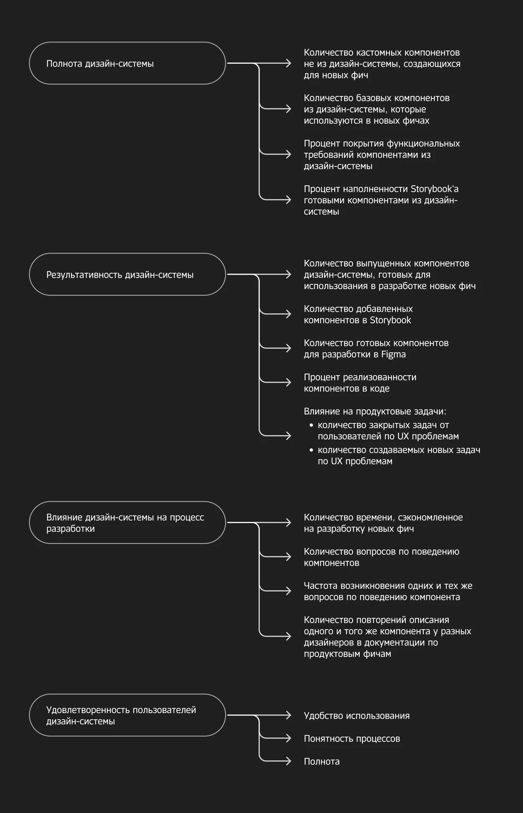
We also ran qualitative research with the people who used the system. Designers, developers and testers told us how it worked for them.

Overall results
Together, we built a system from scratch that supports the team, the product and the business. It helps people work faster and lets the product grow while maintaining quality.
| 30% | faster time to market |
|---|---|
| 60% | of designers’ and developers’ needs covered by the system |
| 80% | improvement in visual quality and consistency — Accessibility — Scalability — Adaptability |